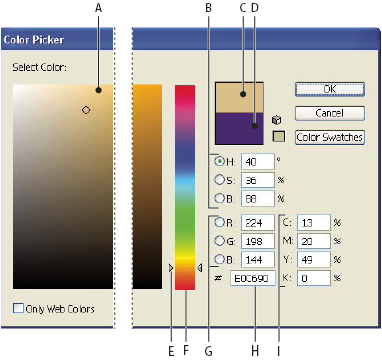

Color Picker overview
The Color Picker lets you select an object’s fill or stroke color by choosing from a color field and spectrum, defining colors numerically, or clicking a swatch.

Color Picker
- A.
- Color field
- B.
- HSB color values
- C.
- Current color
- D.
- Previous color
- E.
- Color spectrum slider
- F.
- Color spectrum
- G.
- RGB color values
- H.
- Hexadecimal color value
- I.
- CMYK color values
 Display the Color Picker
Display the Color Picker
Change the color spectrum displayed in the Color Picker
Display only web-safe colors
Web-safe colors are those used by all web browsers, regardless of the platform.
 Select Only Web Colors.
Select Only Web Colors.